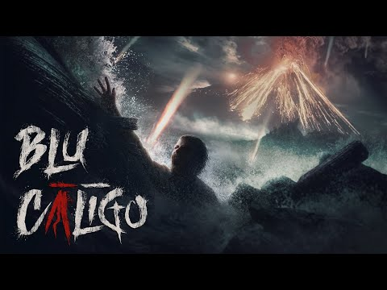
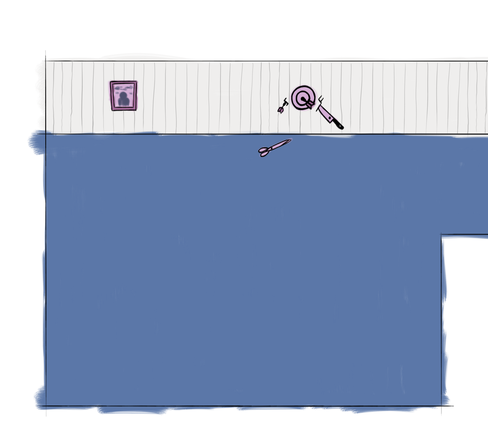

Antonio Troiano
XR & Spatial Developer
XR developer focused on Unity XR and C# — enterprise training, spatial apps, and game jams. Building digital worlds with a retro soul.
XR developer focused on Unity XR and C# — enterprise training, spatial apps, and game jams. Building digital worlds with a retro soul.
Consegne fatte per altri — commesse, collaborazioni, contest.

Training VR per Meta Quest: rivivere in classe la visita a un impianto di produzione. Sviluppo esperienza e interazioni (MTM, 2024).

1941, un esule sul Tirreno: horror in prima persona tra mare, nebbia e una notte che cambia l’isola. Gameplay Unreal per Eostrix Studio, collaborazione indie 2023–2024; il gioco non è ancora uscito.
Progetti personali documentati.
Portfolio retrò statico (HTML/CSS/JS): terminale visivo, sticky scroll, zero build. Case study su workflow agentico e tempi di consegna.
Framework di orchestrazione asincrona per Unity. Actions atomiche, Blackboard, UniTask.
Progetti sviluppati con poco sonno e tanta caffeina.

Napoli, 1700. Sei la maschera fantasma del Real Teatro S.C. Tieni accese le candele, guida i nobili, consegna messaggi proibiti. Ogni segreto ha un prezzo.

Sottosuolo pulsante al tema Roots: due canzoni allungano o richiamano le radici, Shift ti attacca al terreno che ruota. Puzzle-platformer in jam.
Platformer in terza persona: raccogli cappelli, impilali sulla testa e arrampicati per raggiungere gli amici. Jam AIV su Unreal, ottobre 2022.

Ufficio in prima persona sul tema Duality: mail, telefono e desktop sotto stress, giorno e notte che cambiano la luce, fidget spinner per respirare.

Primo passo in jam: ti svegli chiuso in casa dopo la festa e cerchi la chiave tra ricordi smarriti. Point & click a Roma, tema Lost & Found.